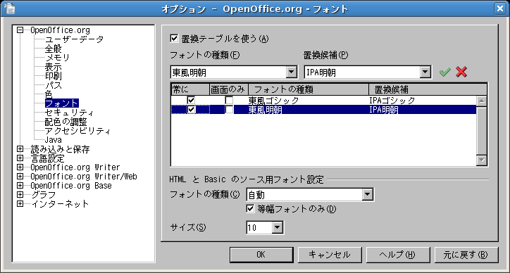
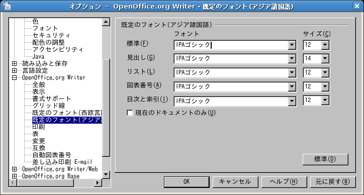

HOME / OpenOffice.org / 2.0
http://oooug.jp/mirror/download/2.0/environment.html
Linux:
OpenOffice.org 2.0 の機能
http://oooug.jp/mirror/www/dev_docs/features/2.0/index.html
OpenOffice.org 2.0 新機能ガイド
http://oooug.jp/mirror/marketing/2.0/featureguide.html
ファイルを読み込むまたは保存するとき、OpenOffice.org は標準で OpenDocument ファイル形式を使用します。
OpenDocument ファイル形式とは、OASIS (Organization for the Advancement of Structured Information Standards) によって標準化された XML ファイル形式です。
| ドキュメント書式 | ファイル拡張子 |
| OpenDocument テキスト | *.odt |
| OpenDocument テキストテンプレート | *.ott |
| OpenDocument マスタードキュメント | *.odm |
| HTML ドキュメント | *.html |
| HTML ドキュメントテンプレート | *.oth |
| OpenDocument 表計算ドキュメント | *.ods |
| OpenDocument 表計算ドキュメントテンプレート | *.ots |
| OpenDocument 図形描画 | *.odg |
| OpenDocument 図形描画テンプレート | *.otg |
| OpenDocument プレゼンテーション | *.odp |
| OpenDocument プレゼンテーションテンプレート | *.otp |
| OpenDocument の数式 | *.odf |
| OpenDocument データベース | *.odb |
OpenOffice.org 2.0 の起動コマンドは OpenOffice.org 1.0 から変更されています。
$ soffice
$ sofifce -writer
$ soffice -calc
$ soffice -draw
$ soffice -math
$ soffice -web
$ soffice -base
OpenOffice.org 2.0.1 以降のバージョンでは、JAVA ランタイムを同梱したインストール版が選択できるようになりました。JAVA ランタイムを含むインストール版は、OpenOffice.org と JRE の同時インストールを可能にします。
Firefox ブラウザーで JAVA アプレットを起動させるには、次の例のようにリンクを作成します。
# ln -s /usr/java/jre1.5.0_06/plugin/i386/ns7/libjavaplugin_oji.so /usr/lib/firefox-1.0.8/plugins/
# apt-get install openoffice.org openoffice.org-l10n-ja openoffice.org-help-ja
- - - -
71.6MB のアーカイブを取得する必要があります。
展開後に追加で 225MB のディスク容量が消費されます。
続行しますか? [Y/n] y
これで使えるようになりますが、分からないことがあれば Debian GNU/Linuxにインストールする というサイトを参照してください。
OpenOffice.org 全体の設定、および各アプリケーションの標準フォントを変更する必要があります。以下のスクリーンショットは、東風フォント（あるいは代 替東風フォント） をIPAフォントに変更する場合です。参考としてください。


■2.0ベータのリリースについて
バージョン 2.0 のリリースに向け、テスト版にて動作検証が行われています。現在、2.0ベータが公開されています。
以下は、プレスリリースからの転載です。
===========================================================================
プレスリリース
報道関係者各位
2005年03月19日
OpenOffice.org日本ユーザー会
http://ja.openoffice.org/
—————————————————————————————————————
OpenOffice.org 2.0ベータをリリースしました
http://ja.openoffice.org/
—————————————————————————————————————
フリーのオフィススィートを開発するオープンソースコミュニティ
OpenOffice.orgは、最新の『OpenOffice.org 2.0』ベータの各国語版をリリース
しました。
OpenOffice.org
2.0は、オープンソースライセンス(LGPL/SISSL)で配布されてい
ます。そのため、誰でも無償で入手でき、自由に使うことができます。また、改
良/修正/再配布を自由に行えます。
日本語版は、日本ユーザー会がQA(品質確認)テストを行いました。
■2.0の主な新機能
新バージョンでは、次のような新機能を搭載しただけでなく、120以上の機能を
改良しました。
・Microsoft Officeとの互換性が向上しました。
・ユーザーインターフェースを改善し、いっそう使いやすくなりました。
・データベース作成機能Baseが加わりました。
・オープン標準のXMLファイル形式OASIS OpenDocumentフォーマットを採用。
・Calcでは、1シートの最大行数が65,536行になりました。
・インストール手順が各OSのネイティブな方法になりました。
- Windows では、Windows インストーラー
- Linux では、RPM パッケージ管理
- Solaris では、ソフトウェアパッケージの管理
■対応プラットフォーム
Windows (98/Me/XP/2000/NT4)
Linux (x86)
Solaris (x86/Sparc)
Mac OS X版は、Ozkさんによる独自ビルド版をダウンロードできます。
■日本語版ダウンロード
日本語版をダウンロードするには、次のページにアクセスしてください。
2.0ベータ ダウンロードページ
http://ja.openoffice.org/download/2.0beta/
2.0について、さらに詳しい情報をこのページで提供しています。
■制限事項
・ユーザーインターフェースの一部が、英語版のままです。
・Baseのレポートウィザードが正常に動作しないことがあります。
・Windows XP/2000では、管理者ユーザーでないとインストールできない
・データペース(Base)などの一部の機能を使用するためには、別途、
Java ランタイム (JRE) のインストールが必要です。
■今後のスケジュール
OpenOffice.org2.0の正式リリースは、4月-6月ごろになると予想して
います。
■2.0デモンストレーション
3月25日(金)26日(土)に開催されるOpenOffice.orgカンファレンスにて、この2.0
ベータ版のデモンストレーションを予定しております。詳しくは、こちらのイベ
ントページをご覧下さい。
OpenOffice.orgカンファレンス2005
http://ja.openoffice.org/marketing/event/oooconja2005/
■本件に関するお問い合わせ先———————————————————————
OpenOffice.org日本ユーザー会
の下記問い合わせ用メールアドレスまでお寄せ
ください。
webmastersja@openoffice.org
担当:可知 豊 氏
OpenOffice.orgの情報をお知らせする専用メーリングリストをご用意してお
りま
す。このメーリングリストは、OpenOffice.orgやオープンソースに関する情報を
お届けするものです。OpenOffice.orgの動向に興味をお持ちでしたら、次のURL
からご登録ください。
OpenOffice.org日本ユーザー会 案内メーリングリスト
http://ja.openoffice.org/ml_info.html
■バージョン 2.0 Beta(テスト版)のインストール手順
バージョン 2.0 より、パッケージ管理が RPM 準拠へと変更されるので、インストールの方法も変更されます。具体的な手順は、OpenOffice/2.0Beta
を参照してください。